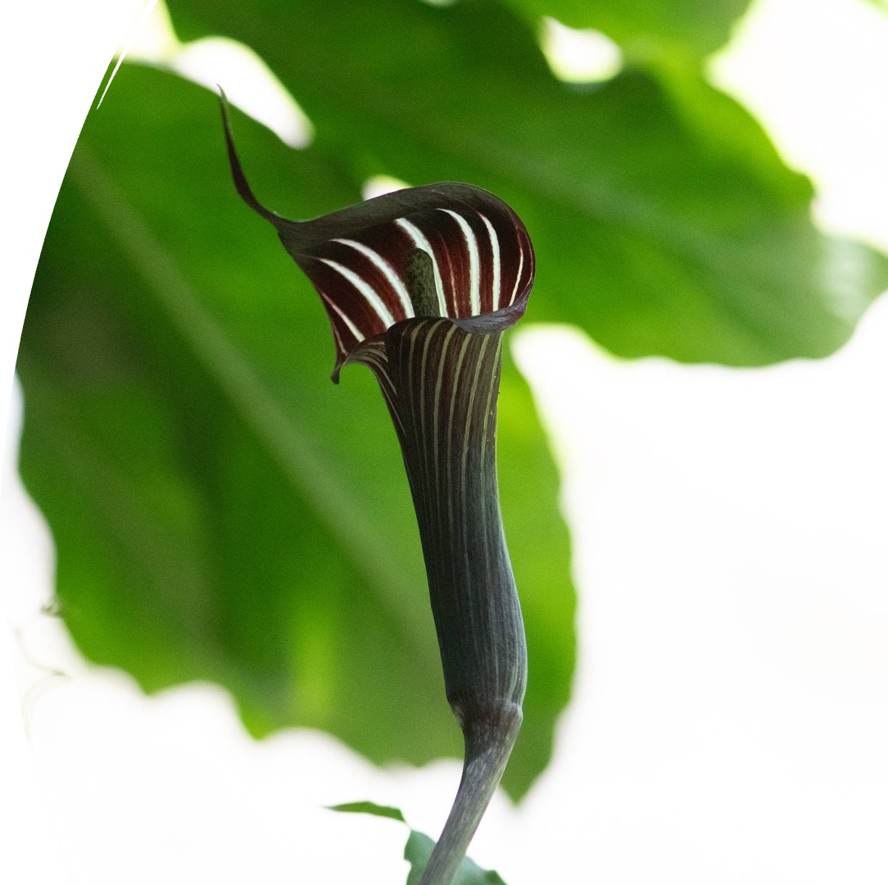
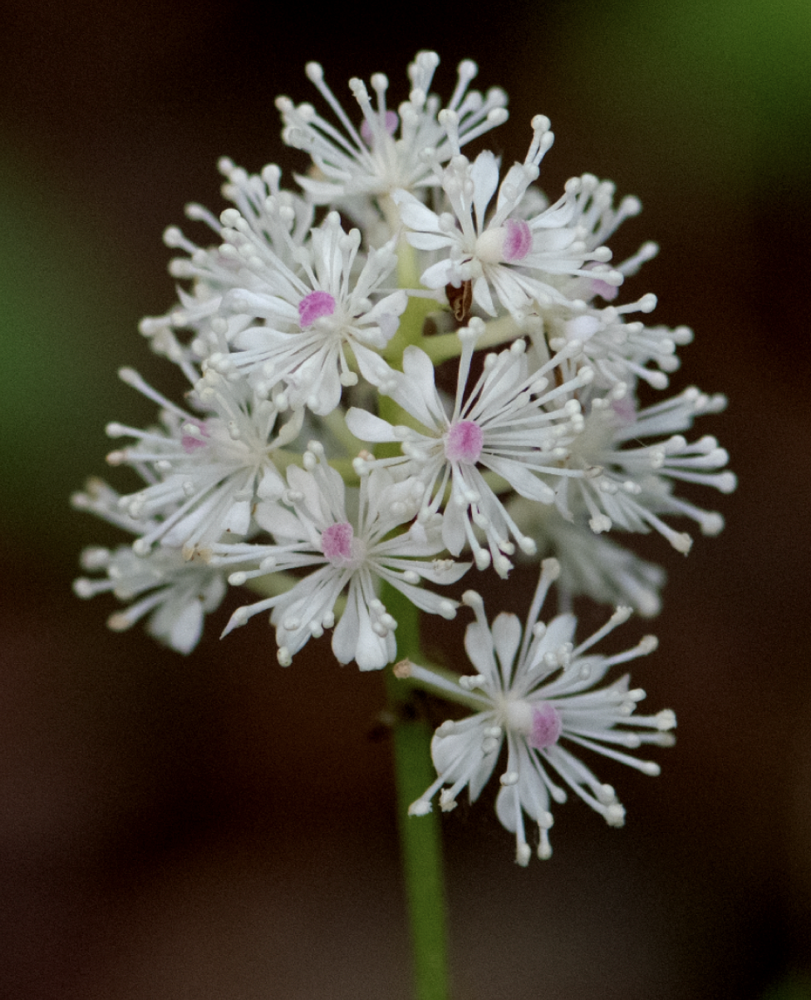
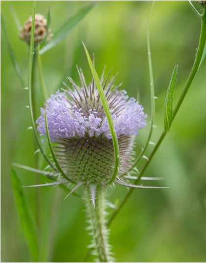
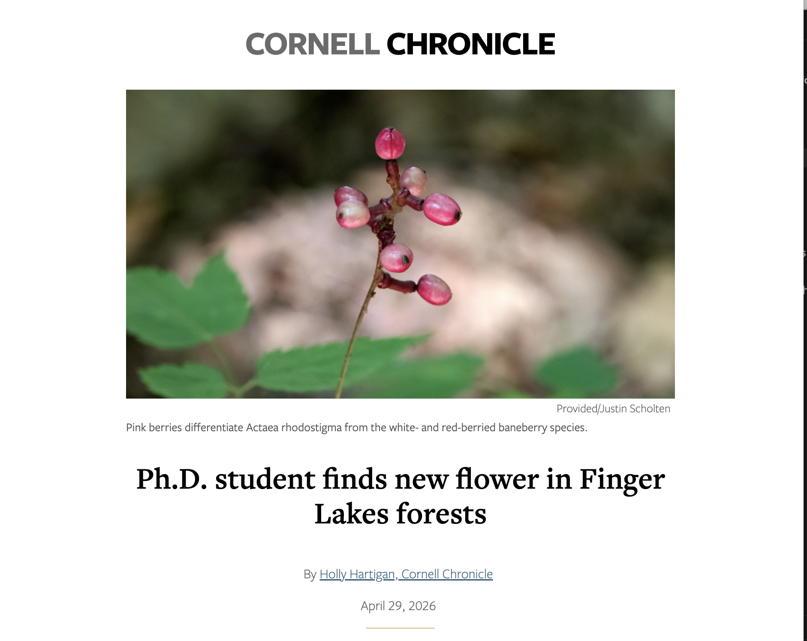
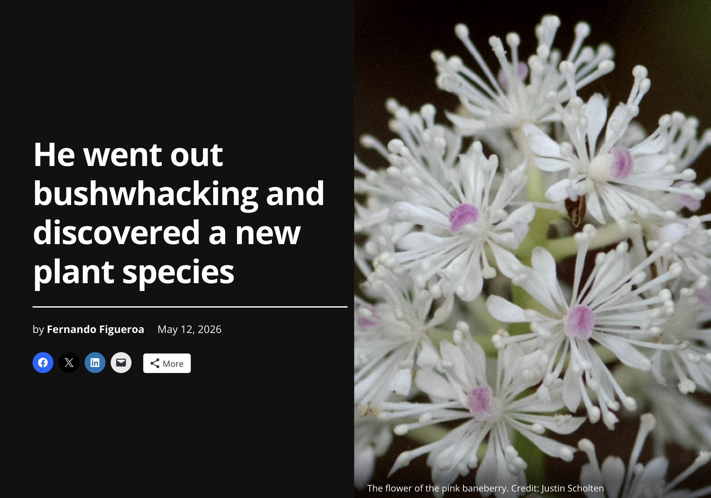
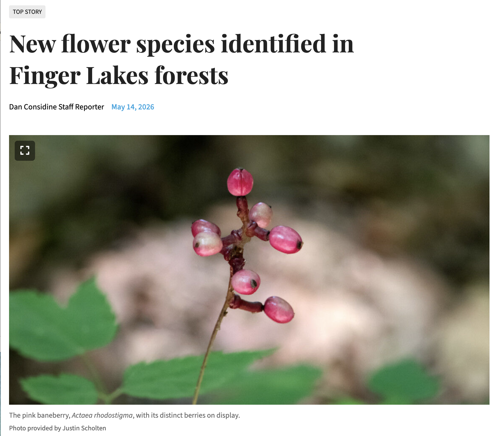

Hybridization dynamics in Arisaema on Shikoku Island, Japan.
Exploring how hybridization, environmental variation, and reproductive biology shape species boundaries, sex expression, and the origin of new species.
PLANT SYSTEMATICS · EVOLUTION · HERBARIUM SCIENCE
I study how plant diversity arises and persists by integrating herbarium collections, field biology, taxonomy, and evolutionary genomics.
ABOUT
I am a botanist and evolutionary biologist at Cornell University, where I presently serve as a Curator in the L.H. Bailey Hortorium Herbarium. I earned my Ph.D. in Plant Biology from Cornell University, studying the evolutionary consequences of hybridization and its role in species formation. My research broadly integrates plant systematics, taxonomy, herbarium collections, field biology, morphology, ecology, and genomic data to understand how plant diversity originates, persists, and is documented.
My work ranges from specimen-based taxonomic and nomenclatural research to field studies of hybridization and speciation in groups such as Arisaema (Araceae), Actaea (Ranunculaceae), Dipsacus (Caprifoliaceae), and Ribes (Grossulariaceae). I have conducted botanical fieldwork across the Northeastern United States, Japan, and Patagonia, described and studied previously unrecognized plant diversity, and published research spanning taxonomy, evolutionary biology, ecology, genomics, and botanical methods. Alongside research and collections work, I am committed to teaching and mentoring students in plant systematics, field botany, specimen-based research, and evolutionary biology.
SELECTED RESEARCH

Exploring how hybridization, environmental variation, and reproductive biology shape species boundaries, sex expression, and the origin of new species.

Examining species boundaries, false signatures of hybridization, and the discovery of previously unrecognized plant diversity in New York state.

Investigating hybridization, invasion dynamics, and the origin and spread of an emerging hybrid across the northeastern United States.
FIELD OBSERVATIONS
This gallery is populated from Justin's public iNaturalist observations spanning 2025 to present.
js/config.js to load the gallery.
SELECTED PRESS

Holly Hartigan, Cornell Chronicle, April 29, 2026.
Read more →
Fernando Figueroa, The Ithaca Voice, May 12, 2026.
Read more →
Dan Considine, Cortland Standard, May 14, 2026.
Read more →SELECTED PUBLICATIONS
Landis, J., Scholten, J., Specht, C.D. · Biodiversity Genomes
Scholten, J., Sprenger, A., Specht, C.D. · Journal of the Torrey Botanical Society 153: 121-139.
Scholten, J., Specht, C.D. · Plant Ecology and Evolution 159: 197-207.
Scholten, J., Sprenger, A., Hullihen, O., Specht, C.D. · Phytotaxa 751: 1-10.
Scholten, J. · Northeastern Naturalist 32: 40-51.
Scholten, J., Livingston, D., Sizemore, M. · Phyototaxa 633: 101-107.
Scholten, J. · Phytomorphology 73: 57-63.
Scholten, J. · Blumea 68: 139-161.
Scholten, J., Sprenger, A., Hullhien, O., Perez, A., Specht, C.D. · Annals of Botany
Scholten, J., Nixon, K.C., Specht, C.D. · Neobiota
Scholten, J.· Novon
CONTACT
For collaboration and research inquiries, email me at jts329@cornell.edu
Email me